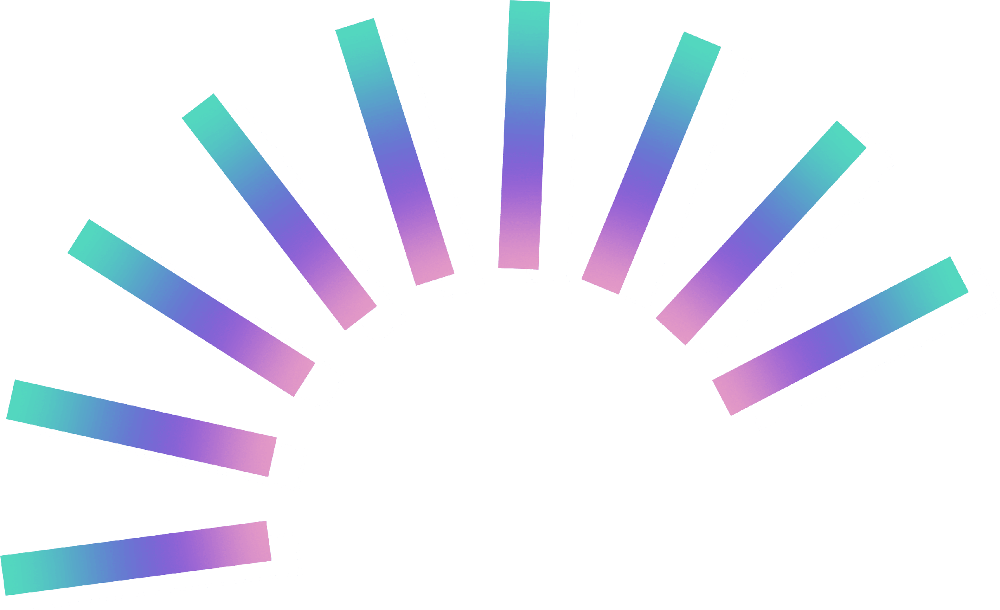
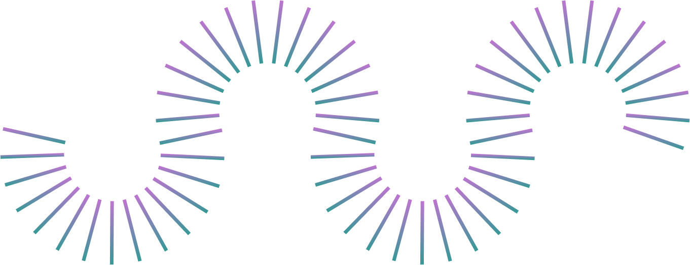
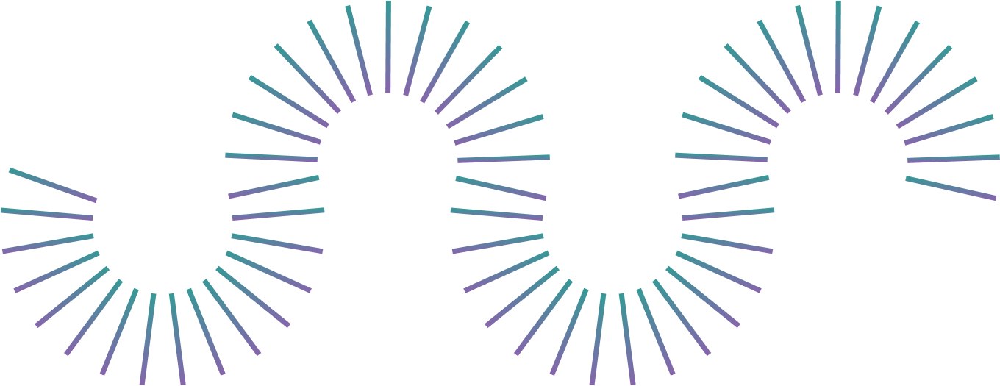

игра за 30 минут
Институт сквозных технологий
Соревнование, где команды придумывают и делают игру за ограниченное время.
Обычно
48–72 часа
и готовая игра
Сегодня
30 минут
и концепция на листе А3
01
Жанр, игрок, механика, мир
Мы здесь
02
Проверить, что играть интересно
03
Код, арт, звук, уровни
04
Ловим баги и скуку
05
Игру находят и покупают
Большинство игр «умирает» на первом шаге: идея есть, а понятной концепции нет.

Общее для всех — одна игра. Помогаем друг другу.
Механики и core loop: что делает игрок и зачем
Мир, герой, лор в трёх предложениях
Логотип, обложка, оформление листа
Аудитория, продвижение и защита проекта
Глубина — своя роль. Перекладина — умение помочь соседу.
01
Запоминается с первого раза
02
«Как Minecraft, но про дроны»
03
Возраст, где и сколько играет, зачем
04
Схема: действие → награда → хочется ещё
05
Мир и герой в трёх предложениях
06
Один кадр, по которому понятна игра
Жюри оценивает только то, что на листе. Рисуйте крупно — его видно из зала.
15-я минута
Тянете ограничение и встраиваете его в игру. Обыграли — +2 балла.
Сессия не дольше 30 секунд
Играют одной рукой в метро
В игре нет ни слова текста
Только кооператив на двоих
0–5
5–15 мин
Жанр, игрок, лор
15 мин — ограничение!
Core loop, лого, обложка
25–30
После · 5 мин
3 на рассказ + 2 на вопросы
Таймер всё время на экране и сам напомнит о каждом переходе.
Защита — по 5 минут на команду: 3 на рассказ и 2 на вопросы жюри.
0–5
Понятно, что делает игрок и почему хочется ещё
0–5
Тема раскрыта и узнаётся в игре
0–5
Ясно, для кого игра и где её найдут
0–5
Уложились в 3 минуты, лист читается
+2 бонуса за обыгранное ограничение
Приз зрителей: голос за чужую команду
Поехали
Тяните тему и распределяйте роли